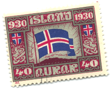
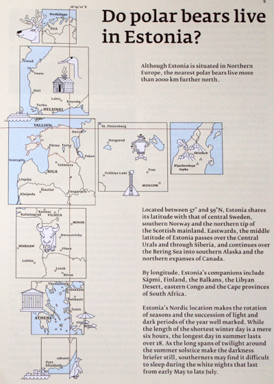

02012 was a busy year, so not as much writing got done here as expected. All-in-all, there were 9 articles written on various topics, from prototype products, to book chapters, to the anniversary of the Titanic.
We also started a newsletter to reach out to everyone with more information that didn’t make sense as long-form articles. Short, interesting topics, crazy links, upcoming conference appearances, and promotion for orbiting projects. You can read through 02012′s newsletter archive and sign-up if you like what you see. It is quarterly, so very low volume, but dense with information.
Connected with the newsletter, we’ve also started a quarterly contest. We make a lot of prototypes, which sometimes get made into real products. We tend to only have a few left-overs, and we want to get them into the hands of our readers. A random draw made the most sense, but we wanted to tie it in with something we love, cartography.
Conferences
In 02012, we were represented at 8 conferences in 4 different countries and over the internet. We were an invited expert in Boston, Massachusetts for Lady Gaga’s launch of the Born This Way foundation. After that we spoke at WhiskyWeb in Edinburgh, Scotland. Next, we presented at the UIE virtual seminar on “The Design choices you make“. A video is online if anyone wants to see it. We attended dConstruct in Brighton, then helped the next day at Indie Web Camp UK. After a few weeks we were back in the UK for Web Expo Guildford. They recorded the session on “Designing with data“, which you can watch online. Closer to home, Reykjavik, Iceland had an “unconference” which was a lot of fun to attend and meet folks, give advice and listen. Finally, a return to Lisbon, Portugal for the annual CodeBits conference. This year was a brand new talk about “Bits to Business, how to sell your software“. The session was well received and will get better with time. Before heading home, we made a short detour back to the UK for ClearLeft’s hack farm were we spent a week building a demo product called Politmus.
Article Updates
This is where we catch-up on updates to older articles. As time passes, more and more older information becomes relevant again, but needs a refresh. These are a selection of articles:
Blank Business Cards
Still one of my favourite ideas in the last year was the blank business cards. Since writing the article, I experimented with short-run printing with Moo.com and handed them out as I went to meetings and conferences. I was nervous that the recipient would feel uncomfortable with the cards, but they were always well received. People loved the idea and always were kind enough to fill it out with the information to keep the conversation going.
Seeing how well the idea worked, I started to look around to to get a larger batch printed at a cheaper rate. Moo.com is perfect for prototyping, one-off ideas or variety, but now that I knew what the cards looked like, how they functioned, it was time to scale it up. In the end, I decided for a better quality even more impactful design and opted to get the cards properly letterpressed rather than silk screened. I removed the branding from the design and had 2,000 letterpressed blank business cards created. I will never need another business card for a long time. These are multi-purpose, white-label cards that anyone can use.
If you are interested in getting a pack, contact me and we’ll see what we can do. Ideally, in the near future they will be fore sale with a few other items created in 02013.
City Swatches
After cleaning-up, I managed to find an old brochure from the Estonians about their country. In it, was the map which inspired the idea behind City Swatches. A simple diagram of what cities are on the same latitude or longitude as the source city. An amazingly simple idea, but with a big impact. To see such dis-similar cities as mine on the same latitude was amazing.
This is one of those projects which could easy become an interesting site in itself. A place where you enter your city name and it can easily display other interesting cities and locations along your latitude and longitude.
The key is augment this with some additional services to make the layout, design and fun-facts even more interesting.
It was a great discovery to find the source for this inspiration. It was even more interesting than I had imagined it in my head. As part of the 02013 road map, we want to improve this idea further and make it even easier for anyone to create and see some city swatches.
Skólapúlsinn: At the intersection of education and technology
Since the last blog post, Skólapúlsinn has been very busy rolling out new products and features. As we wrote about back in 02009 when we introduced Skólapúlsinn as an Education Assessment Tool, we are now also surveying staff and parents about their feelings about the school. Since the start, we’ve been trying to explain that a school is much more than just the students and the building. We’ve avoided the clichéd icons of school buildings and the teacher’s apple because we wanted to build a system which monitors all aspects of school life. By the end of this academic year (June 02013) we’ll have completed this and have more exciting results and case-studies soon after.
We’ve also rolled out an entirely new product as well, Skólavogin. This combines public data with the school’s Skólapúlsinn data. For instance, taking many of the inputs a school has; funding, income, staff, students and other public information and ranking each municipality based on some devrived metrics. For instance, summing up all the students and teachers in a municipality and dividing the two we get a student-to-teacher ratio. We can then rank all the municipalities based on that ratio.
The more interesting data comes when you begin to place that next to their own private results. Viewing the students’ responses to classroom engagement and the staff’s all next to salary or other public variables. Now, this certainly does not preclude any cause and effect or correlation or causation, but it does help to highlight outliners which need investigating. Many times they are easy to explain away, such as a high cost per student in special needs schools. This new internal tool is only a few months old, but already shown its worth. Over the next few months we’ll continue to improve upon it and I’m sure there will be more to write about.
Data Shadow
There was an article this year in the NYTimes about Target’s use of data mining to determine if were pregnant before you knew. The article was entitled, “How companies learn your secrets“. It came across as a very spooky article, but there is no magic behind it, just loads of number crunching. As our data shadow gets longer and darker, it will come back with unexpected assumptions and truths even before we know about them.
What’s in store for 02013
We’ve decided to take a theme for this year. Many of 02012′s ideas revolved around utilities, office supplies, maps and notebooks. The next twelve month in 02013 we’re going to take the theme of “paper” and move a few of our prototypes from an idea, to prototype to actually manufacturing some of the designs. A few are already underway, others need to be perfected, but either way, spending time learning about atoms rather than bits is our goal. Focusing on paper means we already have plenty of tools at our disposal, from great local resources like Reykjavik Letterpress to other start-ups like Newspaper Club and beyond. With our list of ideas and content, we’ll be making more prototypes and more objects to give away and potentially sell. So stay tuned and be ready to print.